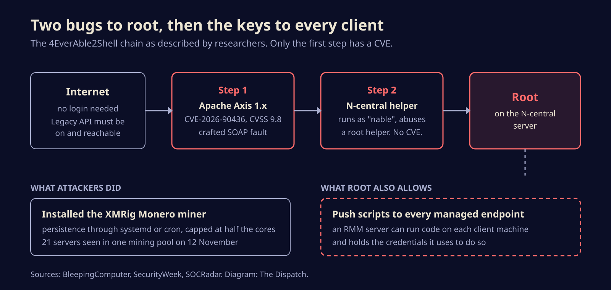

N-central's emergency hotfix lasted two days before a new root exploit beat it
A researcher's public exploit for N-able N-central was mining Monero on 21 servers within hours, 19 of them fully patched. Here is what the chain needs, how to shut it off today, and what to hunt for if you run N-central yourself.
If you run N-able N-central on your own hardware, the hotfix you rushed in on Tuesday does not protect you. A researcher published a new exploit chain called 4EverAble2Shell on 12 November that gives an unauthenticated attacker root on the server, and by early afternoon UTC that day 21 compromised N-central servers were mining cryptocurrency for someone. Nineteen of them were running N-able's latest fix. As of 13 November there was no patch.
N-central is remote monitoring and management (RMM) software: the console managed service providers use to push scripts, updates and remote sessions to every machine they look after. Root on that box is not root on one server. It is a skeleton key to every client behind it.
How a cleanup week turned into a second fire
This is the second round in five days. On Monday 9 November the researcher, Sean Bales, who posts as MSPNightmare, published a chain of more than 30 N-central flaws he called Able2Shell, with no advance notice to the vendor. N-able took its hosted N-central offline and told self-hosted customers to do the same. On Tuesday it shipped N-central 2026.4 Hotfix 2, build 2026.4.1.26, and brought hosted servers back.
Two days later Bales released two more sets of exploits. 4EverAble2Shell goes after the server. Agent2Shell, more than ten separate bugs, reportedly gets SYSTEM-level command execution on Windows machines running the N-central agent, though it needs the target's appliance ID and nobody has reported it used in attacks yet. BankInfoSecurity reports that Bales skipped private disclosure because N-able had left flaws he reported in a different product unfixed for more than five months. N-able's chief executive, John Pagliuca, criticized releasing exploit code before customers could act.
Most outlets date the 4EverAble2Shell release to 12 November; BankInfoSecurity puts it a day earlier. Either way, the gap between public code and real victims was a matter of hours.
![Timeline from 9 to 13 November 2026. Monday 9: more than 30 N-central flaws published, hosted service taken offline. Tuesday 10: Hotfix 2, build 2026.4.1.26, ships. Thursday 12: 4EverAble2Shell and Agent2Shell exploit code goes public; first exploitation attempts at 08:24 UTC; a honeypot captures the full chain at 09:16; at 12:50, 21 mining rigs named after N-central servers appear in one pool, 19 of them on Hotfix 2; N-able then restricts the Legacy API and Intune integration. Friday 13: N-able reports new indicators of compromise and there is still no patch.](../../media/news/n-central-4everable2shell-zero-day/timeline.svg)
What the chain actually needs
The good news is narrow but real: 4EverAble2Shell only works if the Legacy API is switched on and reachable from the internet. That setting arrived with N-central 2025.4 in November 2025, when N-able shut off the old public SOAP interface by default and added a toggle under Administration, Mail and Network Settings, Network Security, Legacy APIs, for customers whose integrations still needed it. Some clearly flipped it back on. Bales himself said he had left it enabled from earlier testing and is now trying to remove the prerequisite, so treat this condition as temporary.
The chain has two steps. First, a crafted SOAP fault sent to the bundled Apache Axis 1.x library, tracked as CVE-2026-90436 and rated 9.8 out of 10, makes the server load a Java class the attacker names. That runs code as the low-privileged nable account. Second, a flaw in an N-central helper script that runs with root rights, abused through a symbolic link, lifts the attacker to root. Only the Axis bug has a CVE, which is why the full chain is not in CISA's catalog of known exploited flaws.

So far it is miners. That is the lucky version.
The only payload seen so far is XMRig, a Monero miner, installed by a script called jup.sh, kept alive through systemd or cron and capped at half the processor cores to stay quiet. Infected servers reported to the mining pool under names starting with nc_ followed by the server's IP. The 21 rigs were spread across the US, Canada, South Africa, the UK, Germany, France and Sweden.
N-able said on 12 November it had seen no signs of compromise from the new flaws. On 13 November it said it had found additional indicators and was working with the affected customers. Huntback, one of the firms that watched the attacks, summed up the gap: "Applying Hotfix 2 is not enough on its own."
A miner is the attacker who wanted your electricity. The next one will want your clients.
What to do before the patch
If you run N-central on premises, do these today:
- Turn off the Legacy API and confirm it is off, even if you believe it never was. Check which integrations break; N-able has already disabled its Intune integration as a precaution.
- If you cannot turn it off, take the server's web and SOAP endpoints off the internet and put them behind a VPN or a management network. An IP allowlist alone is weak cover.
- Keep Hotfix 2 installed. It does not stop this chain, but it closes the earlier Able2Shell bugs.
- Hunt. Look for POST requests to
/dms/services/ServerUIcarrying a SOAP fault, files at/tmp/.xvdor/var/tmp/.xvd, anxvd.servicesystemd unit or/etc/cron.d/xvd, and processes with--rig-id nc_in their command line. A clean result is not proof. - If you find anything, treat the server as fully owned: isolate it, keep the logs and disk, rebuild from a known-good install and rotate every credential N-central stores or uses. Then check managed endpoints for new admin accounts, scheduled tasks and remote sessions since 11 November.
Hosted N-central customers are not exposed to the server chain, according to N-able, but should still update agents and probes.
The bigger problem with RMM
Attackers have used RMM consoles as a one-stop route into hundreds of small businesses for years, because one login reaches everything. What changed this week is the tempo. A vendor shipped an emergency fix, a researcher answered with a bypass in two days, and criminals turned public code into running miners before most admins had read the advisory. For anyone choosing or running RMM, the questions worth asking now are how few of its interfaces face the internet and how fast its maker can ship a second fix after the first.
Sources
- BleepingComputer, New N-able "4EverAble2Shell" zero-day exploited hours after PoC released
- SecurityWeek, Hackers exploit new N-central zero-day hours after PoC publication
- BankInfoSecurity, Researcher drops more zero-day exploits for N-able software
- SOCRadar, 4EverAble2Shell at a glance
- N-able documentation, N-central 2025.4 release notes (Legacy API setting)
Written with AI for Bade's Mod Shop. Facts are checked against the sources above on the day of publishing; if one is wrong, open an issue.